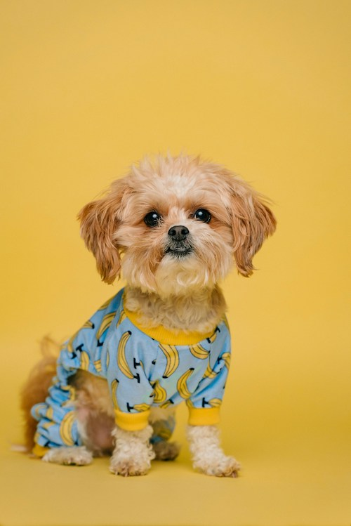

I prefer dogs over cats mainly cause dogs have way more energy and spirt than cats. Plus dogs give more emotion than cats. Adding on to that dogs are very protective, for example if there was an robbery in my house my dog would attck him. yet if it was a cat it would most likely show the robberer to all my valuable stuff. Adding on to that dogs just get your emotions and know how to cheer you up like they are family since they care for you.
